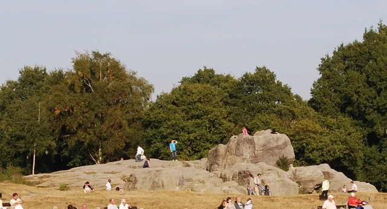
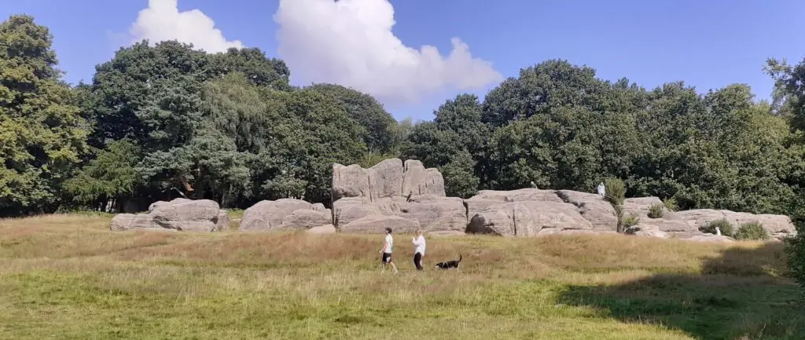
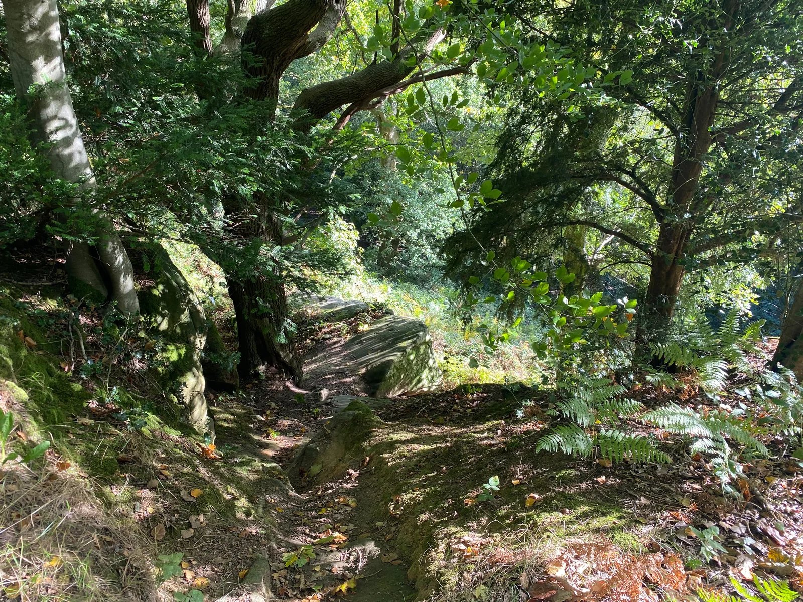
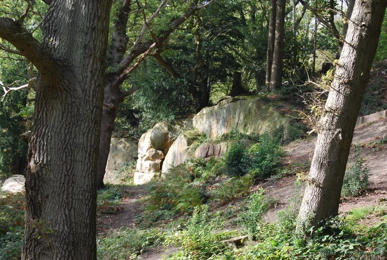

Caring for the Commons Since 1991
An independent charity formed by local residents to preserve, enhance, and enjoy the 256 acres of historic common land.
“To protect, enhance, and secure permanent community ownership of Tunbridge Wells and Rusthall Commons — ensuring these 256 acres remain free, open, and cherished for generations to come.”
The Friends of Tunbridge Wells and Rusthall Commons is the independent registered fundraising charity and membership body for our beautiful Commons.
The Charitable Objectives of the Charity
The registered constitutional objectives of the Friends of Tunbridge Wells and Rusthall Commons define our purpose, legal guidance, and community stewardship:

Protection, Conservation & Landscape Heritage
“To promote the protection, conservation, maintenance and enhancement of Tunbridge Wells and Rusthall Commons for the ongoing benefit of the community, including its natural environment, landscape, biodiversity, historic features and traditional character.”

Public Education & Environmental Learning
“To advance the education of the public in the conservation, protection and improvement of the physical and natural environment of Tunbridge Wells and Rusthall Commons.”

Recreation, Health & Inclusive Leisure
“To promote for the benefit of the inhabitants of Tunbridge Wells and Rusthall and the surrounding area the provision of facilities for recreation or other leisure time occupation of individuals who have need of such facilities by reason of their youth, age, infirmity or disablement, financial hardship or social and economic circumstances or for the public at large in the interests of social welfare and with the object of improving the condition of life of the said inhabitants.”
Born from the Storm: The Story of The Friends
On the night of 15–16 October 1987, hurricane-force winds swept across southern England in what became known as the Great Storm. Tunbridge Wells and Rusthall Commons were among the hardest hit landscapes in Kent. Hundreds of ancient oak, beech, and sweet chestnut trees were uprooted overnight, historical pathways were blocked, and the landscape was left in devastation.
In the days that followed, local residents from Tunbridge Wells and Rusthall came out with hand tools, wheelbarrows, and determination to help clear paths, care for damaged veteran trees, and begin replanting.
What started as an urgent community rescue effort quickly revealed a deeper truth: the Commons needed a permanent, dedicated body of local supporters to champion their ecology, fund conservation enhancements, and ensure they would never be neglected.


In 1991, following the destruction caused by the Great Storm of 1987, Patrick Shovelton (now sadly passed) founded The Friends to support the Commons Conservators in their work to restore them to their former glory. His aim was to raise public awareness of the importance of the Commons and rally the community to care for them.
“... the conservation, maintenance, preservation and peaceful enjoyment for the benefit of the public of the Commons by such means as the Society in consultation with the Conservators for the Commons thinks fit.”
Over the past three decades, the Friends have proudly continued Patrick's wonderful work: funding ecological improvements and conservation projects, restoring heritage ponds, running regular practical volunteer conservation mornings, publishing free trail guides, and now leading the historic community bid to secure the freehold for all.
Official Charity Documents
Download our governing constitution, safeguarding policy, and latest Annual General Meeting minutes.
Have a Question or Wish to Connect?
Whether you have an enquiry about membership, local wildlife, organizing an event, or contacting the charity committee, we'd love to hear from you.